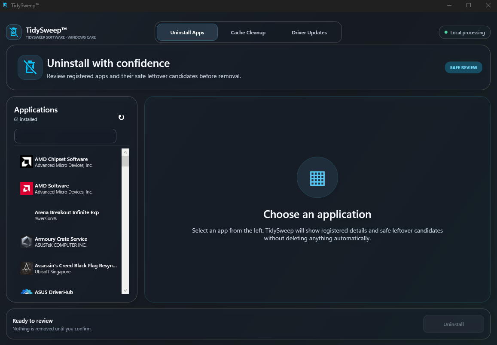

Windows 10 and 11 · Version 1.2.1
TidySweep for Windows
A friendly, local-first toolkit for keeping your PC clean, understandable, and under your control.
- Local-first
- No account
- Multiple-drive support
- User-controlled actions

Uninstall with confidence. Browse registered apps and review safe leftover candidates before confirming removal.
One calm place for everyday PC care
Uninstall Apps
Browse registered applications, inspect their details, and review safe leftover candidates before removal.
Cache Cleanup
Scan selected drives for temporary files, caches, unused folders, and application leftovers.
Storage insights
Understand how Windows files, games, videos, media, large files, and other categories use space.
Driver Updates
Check official Windows driver sources only after you choose to use the internet-connected feature.
Designed around trust
ProcessingCore maintenance runs locally
InternetRequested only for driver checks
RemovalNothing happens until you confirm
Store statusMicrosoft certification in progress
Website-download signing notice: this installer uses the current TidySweep Software self-signed certificate, not a publicly trusted commercial Authenticode certificate. Windows SmartScreen or antivirus software may still show a warning. The Microsoft Store edition will be linked here after certification.